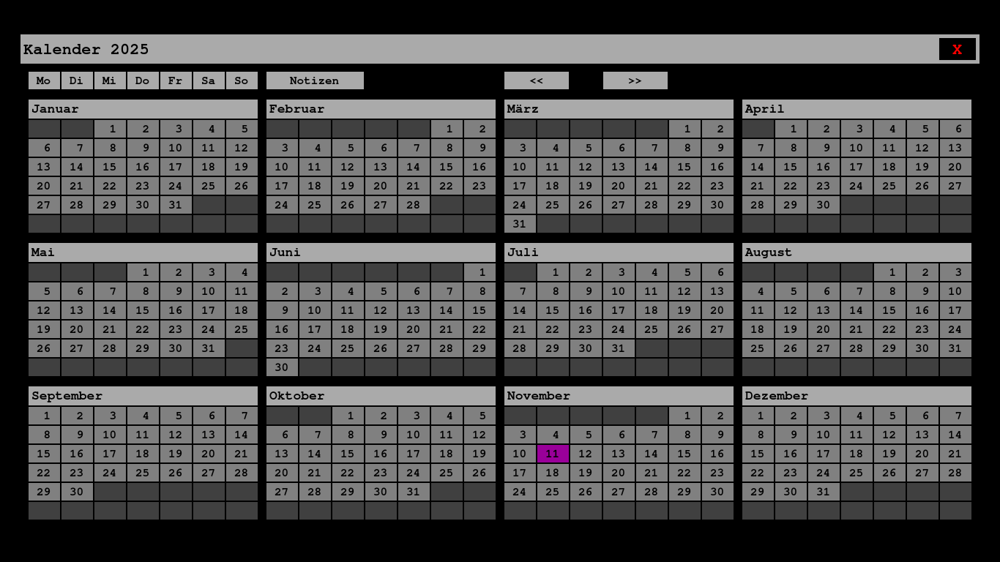
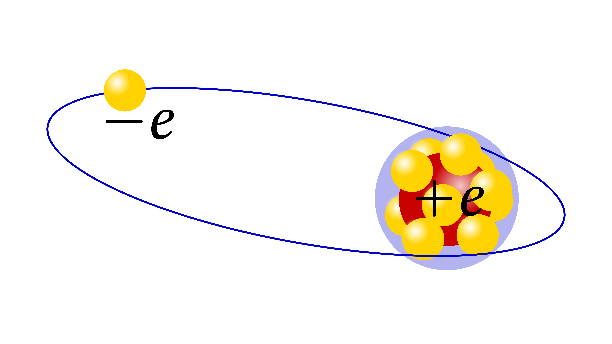
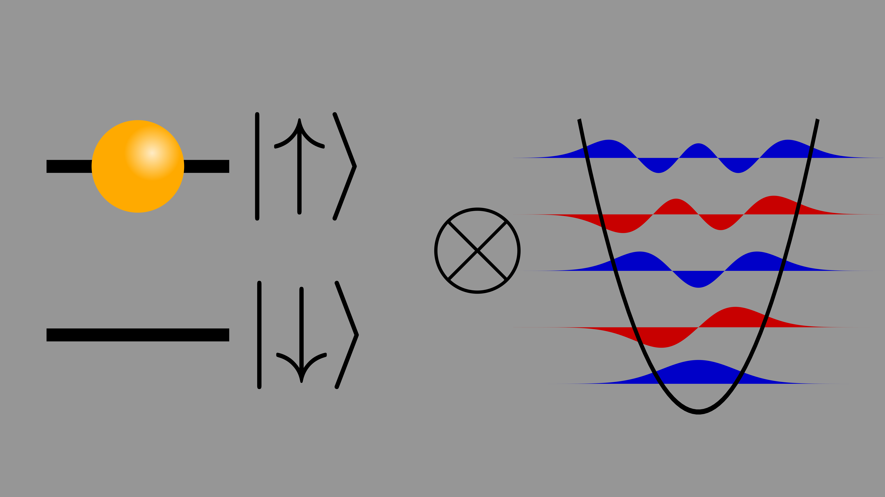
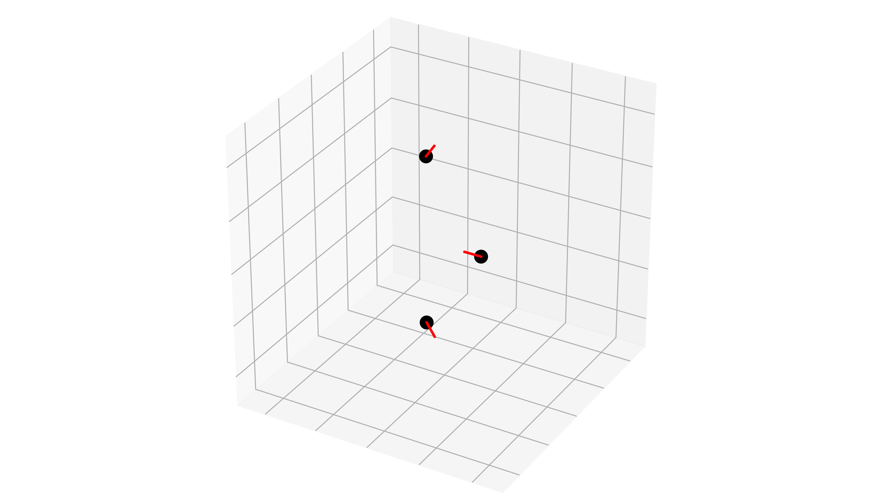
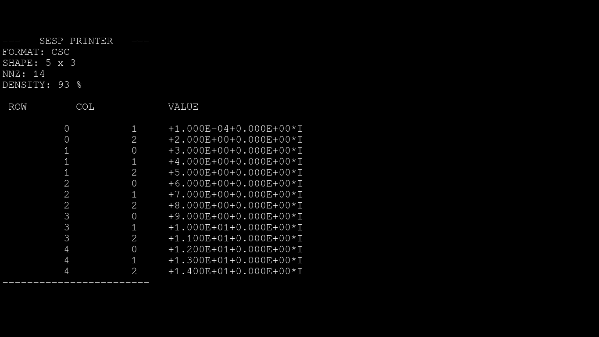
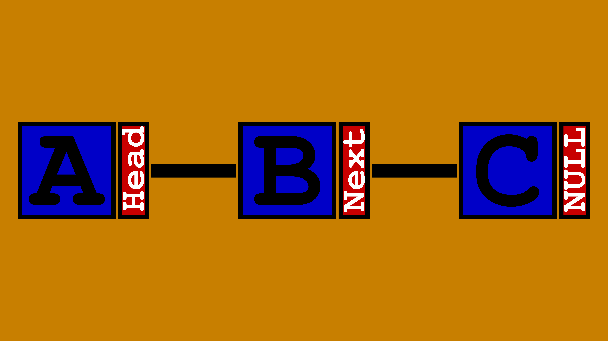

Introduction
Here, I provide a comprehensive overview of my projects hosted on GitHub. For each repository, I have summarised the primary purpose and core features in a concise manner. Furthermore, I use this space to announce plans for future projects and upcoming updates to existing ones.
Planned work
- I will complete the physics section of my GitHub pages in the near future.
- I intend to add an electrodynamics section to this website, presenting several of my private projects.

A simple GTK-4 calendar, inspired by a classic paper-based approach
Modern digital calendars often come with an overwhelming plethora of features. Whilst this is undoubtedly beneficial for many, I personally find software with unnecessary complexity rather distracting. Consequently, I decided to develop a minimalist GTK-4 calendar that replicates the core utility of a traditional paper calendar: it allows one to append text-based notes (in monospace) to specific days and mark them accordingly. Beyond a general notes window and highlighting the current date, the programme remains intentionally simple.
The calendar is written entirely in C utilising the GTK-4 headers. No binary distribution is provided; instead, the application should be built by the user directly. This ensures maximal control and allows for straightforward customisation of the calendar’s appearance through a single C source file, bypassing the need for convoluted configuration file formats.

Alkali-metal atom and alkaline-earth-metal ion calculator
The AlkCalc library is a suite of streamlined programmes, written in C and FORTRAN, designed to numerically compute single-electron bound states of alkali-metal atoms and alkaline-earth-metal ions through a parametric model potential. Comprehensive details, documentation, and a README are available in English on GitHub; however, the README is also available in German.
The software comprises two distinct components: the first is dedicated to data generation, specifically the numerical computation of radial eigenstates and their associated eigenenergies. This data is subsequently utilised by the second part, which provides a functional interface. This interface allows for the efficient extraction of eigenenergies, eigenstates, radial matrix elements, etc., from the generated datasets.
AlkCalc follows a &lsquol;hands-on’ philosophy, as it is structured simply enough to allow for direct interaction with the source code. Developed in C99, the library is virtually platform-independent. Furthermore, as high-level languages typically offer convenient protocols for calling C code (such as Ctypes or Cython for Python), developing an interface for languages like Python, Julia, or MATLAB is straightforward. Thus, AlkCalc serves both as a standalone tool and as a foundation for high-level software development.

A Python library for the classical simulation of quantum mechanical problems
Whilst researching for my Master&rsqou;s thesis, it became apparent that my daily simulations frequently required the same numerical quantities. To avoid the redundancy of rewriting the same code repeatedly, I decided to develop a small software library to optimise my workflow.
I implemented this library using Python, as it offers a convenient interface to highly optimised and well-tested FORTRAN routines. I have incorporated several concepts from QuTiP, which I gratefully acknowledge here.

A Python library to work with Coulomb crystals
This project is a Python package designed for studying so-called Coulomb crystals — a type of crystal that forms when charged particles are trapped in an attractive potential. The software enables the calculation of equilibrium positions and the displacement signatures of collective vibrational modes of such crystals. Furthermore, the package provides tools to visualise the crystal, offering intuitive insights into this exotic phase of matter.
The package also includes a specialised Python class tailored for cold trapped-ion Coulomb crystals, which are commonly studied in Paul and Penning traps.

A simple sparse and dense matrix library in native C
I found the process of utilising sparse matrices in C to be somewhat convoluted, often requiring the installation of rather extensive software packages, such as SuiteSparse. Therefore, I decided to implement a lightweight sparse matrix library myself.
The library is primarily designed for direct integration into C programmes, although it can be easily interfaced with high-level languages like Python or Julia. By focusing on a minimalist design and core functionality, I have ensured that additional features can be integrated straightforwardly as required.

A C library to work with linked lists
I required a native C library that would allow me to manipulate linked lists efficiently, which led me to develop this project.
The library is simple, written in native C, and can be seamlessly included in any C programme via a single header file.
Educational implementation of a Wayland client
When I first migrated my systems from the X Window System Protocol to the Wayland Protocol I was curious to explore the underlying mechanisms of the protocol. To facilitate this learning process, I developed this simple example Wayland client.
This programme is intended solely for educational purposes and should not be utilised in real-world applications.